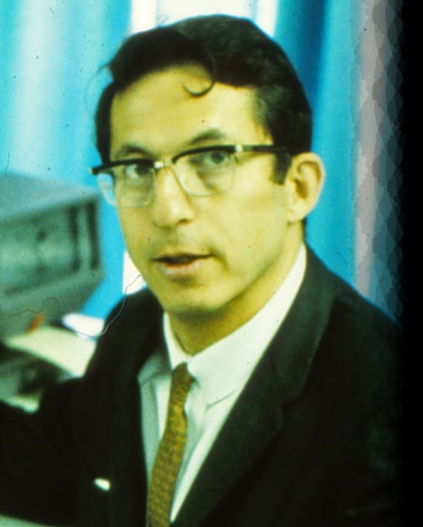

Robert Steven Ledley:
um dos pioneiros na
tomografia computacional

Referências
- National Institutes of Health (NIH), A história por trás do desenvolvimento do primeiro tomógrafo computadorizado de corpo inteiro, contada por Robert S. Ledley., (s. d.), acesso em 7 de setembro de 2026
- Robert S. Ledley, National Inventors Hall of Time, (s. d.), acesso em 7 de setembro de 2026
- ACTA (Automatic Computerized Transverse Axial) - O scanner de raios X tomogrófico de corpo inteiro, Proc. SPIE 0057, Effective Utilization of Photographic and Optical Technology to the Problems of Automotive Safety, Emissions, and Fuel Economy, null (1 Jul 1974), acesso em 8 de setembro de 2026
- Robert Ledley Computer Tomography (CT) Scanner, Lemelson-Mit, (s. d.), acesso em 7 de setembro de 2026
- Carlos Alberto dos Santos, A computação chega à tomografia, Ciência Hoje, (25 de abril de 2008), acesso em 7 de setembro de 2026
- The Washington Post, Terry Ledley Obituary, (s. d.), acesso em 7 de setembro de 2026
- Revista Bio Info, Mapeamento de competências em bioinformática: panorama geral dos profissionais das áreas ômicas no Brasil, (30 de julho de 2022) , acesso em 7 de setembro de 2026
-Uma breve biografia
Robert Steven Ledley nasceu em 28 de junho de 1926, na cidade de Nova York. Sua paixão sempre foi o estudo da física, contudo, seu pai não o apoiava, com a argumentação de que ser um físico não seria o bastante para ter sucesso financeiro, que se tornaria apenas um professor medíocre, então seria melhor garantir seu sucesso na carreira odontológica - além do mais, a família já possuía alguns profissionais dentistas - e, dessa maneira, poderia sustentar seus interesses pessoais. Robert ouviu as palavras de seu pai, mas também seguiu sua paixão. Estudou odontologia na universidade de Nova York, se tornando um doutor odontológico em 1948 e, por outro lado, ao mesmo tempo, estudou física na Universidade Columbia, recebendo seu mestrado em física teórica em 1949. No mesmo ano, casou-se com sua parceira Terry Wachtell Ledley, sua única esposa, permanecendo juntos até o final de sua vida. Sua esposa também fora uma influência para Robert em sua jornada na tecnologia, visto que Terry foi uma das primeiras programadoras da equipe que operava o SEAC (Standards Eletronic Automatic Computer), um dos primeiros computadores programáveis da história.
Após sua formação, Ledley atuou no Instituto Nacional de Padrões e Tecnologia (EUA), como físico e analista de pesquisas na Universidade Johns Hopkins. Em meados de 1960, contribuiu para o desenvolvimento do primeiro software capaz de tornar clara a sequência de aminoácidos de uma proteína, junto de Margaret Dathoff. No período de 1968-1970, atuou como professor de Engenharia Elétrica na Escola de Engenharia e Ciências Aplicadas da Universidade George Washington. Na década de 70, o físico foi empregado como professor do Departamento de Fisiologia e Biofísica na Faculdade de Medicina do Centro Médico da Universidade de Georgetown. Em 1973, sua grande invenção revolucionou a medicina de diagnóstico, com o primeiro tomógrafo computadorizado de corpo inteiro. Ainda na década de 70, ele atuou como professor do Departamento de Radiologia do Centro Médico e, posteriormente, recebeu o título de diretor do Divisão de Computação Médica e Biofísica. No ano de 1997, conquistou a Medalha Nacional de Tecnologia, entregada pelo presidente Clinton
O profissional dedicou sua vida às pesquisas da área da medicina informática, sendo uma referência extremamente relevante para ambas áreas, possuindo mais de 60 patentes. Em sua vida pessoal, teve dois filho dentro do casamento. Steven faleceu em 24 de julho de 2012, em decorrência do alzheimer, segundo seu filho, Fred Ledley.

Modelo desenhado por Ledley
-Principal inovação
O nomeado scanner ACTA (Automatic Computerized Transverse Axial), podendo ser simplificado para tomógrafo ACTA, foi o primeiro aparelho capaz de produzir imagens precisas - tanto de tecidos moles, quanto aos ossos - do organismo humano de modo que abrangesse todo o corpo. A base da ideia provém de um importante estudo e considerado o começo de toda a tomografia computadorizada, desenvolvido pelo físico Allan Comarck, que, seguindo a mesma lógica dos exames de raio-x, descreveu a tomografia computadorizada - considerando a anatomia interna de um corpo, ou seja, irregular - como a formação de imagens a partir do diferencial de coeficiente da radiação absorvida pela estrutura. O problema matemático em questão pode ser descrito como:
"Seja D um domínio bidimensional finito no qual existe material absorvente caracterizado por um coeficiente de absorção linear g que varia de ponto a ponto em D e é zero fora de D. Embora g ~ 0, é conveniente permitir que seja negativo para fins de discussão. Suponha que um feixe paralelo, indefinidamente fino, de raios gama monoenergéticos atravesse D ao longo de uma linha reta L, e que a intensidade do feixe incidente em D seja 10 e a intensidade do feixe emergente de D seja I. Então:
I = I0 exp[-∫L g(s)ds],
Onde o L sob a integral indica que a integral deve ser avaliada ao longo de todo o L em D, e s é uma medida de distância ao longo de L"- J. Appl. Phys. 34, 2722 (1963, pg.2722); doi: 10.1063/1.1729798.
Dessa maneira, Cormack fez um experimento aplicando diversas varreduras (feixes de elétrons) em uma estrutura cilíndrica de alumínio envolvida por outra estrutura - dessa vez, de madeira - de mesmo formato, então, em todos os ângulos, a estrutura dos materiais não mudaria, seria possível calcular o coeficiente de absorção radioativa de cada camada utilizando a matemática pura e, consequentimente, criar uma imagem. O experimento foi um sucesso, o que deu brecha para outra experiência que serviria de inspiração. Realizada pela revista Science, a equipe aplicou a teoria de Cormack para obter uma visualização transversal de um vírus, assumindo que sua estrutura fosse totalmente esférica. Para melhorar a qualidade da imagem, utilizaram a técnica de convolução, que se baseia no filtro de sinogramas (união de capturas de um raio-x em diversos ângulos), manipulando os dados brutos para projetar uma visão de maior qualidade.
Unindo as ideias, a estrutura é um equipamento que emite um feixe de raio-x extremamente fino, que atravessa o corpo e entra em contato com o ioneto de sódio, provocando uma iluminação, captada e medida por um tubo fotomultiplicador. Esse processo é acompanhado por um movimento de translação, permitindo que sejam capturadas de diversos ângulos, digitalizados em um computador, sintetizando a coleção em uma só imagem e fornecendo os coeficientes de absorção da seção transversal capturada.
Com a base teórica reforçada, chegava a etapa da prática. Robert enfrentou dificuldades em encontrar um engenheiro mecânico que aceitasse realizar seu projeto, portanto, decidiu que ele mesmo o faria, afinal, já havia estudado a área. Apesar de ter realizado o rascunho no papel sozinho, ele contou com três parceiros de equipe, sendo eles: Tom Golab, um engenheiro eletrônico; James Wilson, um matemático e programador; e Frank Rabitt: um torneiro mecânico responsável pela estrutura física dos cilindros.
O último passo foi pintar toda a máquina, pois, apesar de não estar de fato enferrujada, sua aparência parecia gasta e, certamente, um aparelho não seria bem recebido com uma má aparência. Com o resultado final, o projeto foi apresentado e muito bem recebida por todo o público. Em uma entrevista disponível no site da Nacional Libary of Medicine, Steve relata diversos relatos que chegaram ao físico referentes à tecnologia, responsável por salvar inúmeras vidas com o diagnóstico precoce de doenças, identificação de lesões não visíveis à olho nu, etc.